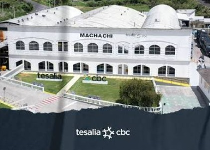

A
Control de Avisos SAP
Seguimiento de avisos, estados, responsables, tiempos de notificación y detalle operativo.
- Avisos abiertos y cerrados
- Estado de tiempo
- Seguimiento por responsable
- Descarga de detalle

Planificación, ejecución y análisis de mantenimiento para una operación confiable y eficiente.
Acceso rápido a las principales herramientas de mantenimiento.
Seguimiento de avisos, estados, responsables, tiempos de notificación y detalle operativo.
Registro y consulta compartida del seguimiento de avisos de mantenimiento, con evidencias fotográficas.
Seguimiento de la programación, estado SAP y notificaciones de las órdenes de trabajo.
Programación semanal compartida de trabajos de Ingeniería, integrada con Avisos, Órdenes SAP e ingresos manuales.
Consulta de la demanda del plan de mantenimiento, materiales, valorización, recurrencias y disponibilidad de repuestos.
Indicadores de órdenes de trabajo, estados SAP, costos y notificaciones, actualizados desde los datos publicados.